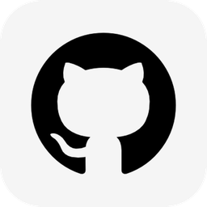

Onde me Encontrar?
Esta é a página para você me conhecer melhor e entrar em contato. Aqui você encontra as formas de falar comigo, acompanhar a minha trajetória e analisar os projetos que desenvolvo. Use o e-mail para conversar diretamente, o LinkedIn para ver minha formação e o GitHub para explorar meu código. Fique à vontade para escolher o canal que preferir!
O e-mail é o caminho mais direto para falar comigo. Use para tirar dúvidas, propor uma conversa, falar sobre projetos ou enviar qualquer mensagem que precise de mais detalhes. Respondo o mais breve possível.
Meu e-mail: nicolasnogorsi@gmail.com
GitHub
O GitHub é onde eu guardo o meu código. Lá você encontra os projetos que desenvolvi nas aulas de Desenvolvimento Web, além deste portfólio. Ainda estou no começo da jornada, então o perfil cresce a cada trabalho novo. É o melhor canal para quem quer ver como eu programo na prática.
Meu perfil: @Nicolas-Orsi

O LinkedIn é o meu espaço profissional. Lá você encontra minha formação em Engenharia de Software, as tecnologias que estudo e os projetos que já realizei. É o melhor canal para quem quer conhecer minha trajetória, conversar sobre oportunidades ou se conectar comigo.
Meu perfil: @nicolas-orsi